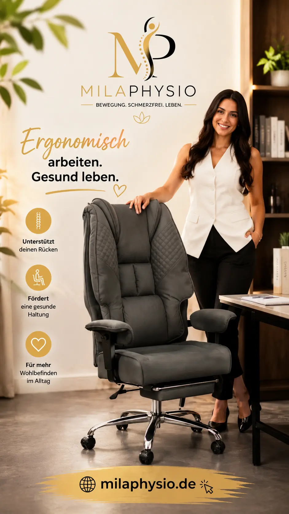

EXCEBET Chefsessel Bürostuhl XXL
Ein großzügiger Bürostuhl mit hoher Rückenlehne, Fußstütze und verschiedenen Einstellungsmöglichkeiten für den Arbeitsplatz.
Bei Amazon kaufenMeine Einschätzung als Physiotherapeutin
Ein Bürostuhl ist ein wichtiger Bestandteil eines Arbeitsplatzes, an dem täglich mehrere Stunden gearbeitet wird.
Dabei ist für mich nicht nur entscheidend, wie weich ein Stuhl ist. Viel wichtiger ist, ob Sitzhöhe, Rückenlehne und Armlehnen an die eigene Körpergröße angepasst werden können.
Der EXCEBET Chefsessel ist besonders großzügig gestaltet und bietet eine hohe Rückenlehne sowie eine Fußstütze. Dadurch kann er für Menschen interessant sein, die einen größeren und stärker gepolsterten Bürostuhl bevorzugen.
Aus physiotherapeutischer Sicht sollte jedoch auch bei einem komfortablen Stuhl darauf geachtet werden, nicht stundenlang in exakt derselben Position zu sitzen.
Was finde ich an diesem Bürostuhl interessant?
Große Sitzfläche
Die großzügige Gestaltung kann für Menschen interessant sein, die mehr Platz beim Sitzen bevorzugen.
Höhenverstellbar
Eine passende Sitzhöhe ist wichtig, damit Füße und Beine bequem positioniert werden können.
Hohe Rückenlehne
Eine hohe Rückenlehne kann zusätzlichen Halt und Komfort bieten.
Armlehnen
Armlehnen können die Arme unterstützen und dadurch eine entspanntere Sitzposition ermöglichen.
Fußstütze
Die integrierte Fußstütze kann für Pausen und entspannte Sitzpositionen interessant sein.
Homeoffice
Der Stuhl eignet sich grundsätzlich für längere Arbeitsphasen im Homeoffice oder Büro.
So würde ich den Arbeitsplatz einstellen
Ein guter Bürostuhl kann nur dann sinnvoll genutzt werden, wenn er richtig eingestellt ist.
Sitzposition
- Füße stabil auf dem Boden
- Knie ungefähr im rechten Winkel
- Schultern entspannt
- Rücken durch die Rückenlehne unterstützt
- Sitzhöhe an die eigene Körpergröße anpassen
Arbeitsplatz
- Bildschirm möglichst passend zur Augenhöhe positionieren
- Tastatur und Maus nah am Körper
- Ellenbogen entspannt halten
- Regelmäßig die Sitzposition verändern
- Bewegungspausen einbauen
Für wen kann dieser Bürostuhl interessant sein?
Der EXCEBET Chefsessel kann besonders für Menschen interessant sein, die einen größeren und stärker gepolsterten Bürostuhl bevorzugen.
Er kann beispielsweise für Homeoffice, Gaming, Büroarbeit oder längere Tätigkeiten am Computer eingesetzt werden.
Besonders wichtig ist dabei, dass die Sitzhöhe und die Position des Arbeitsplatzes zur eigenen Körpergröße passen.
Bei bestehenden Beschwerden sollte nicht allein der Stuhl als Lösung betrachtet werden. Häufig spielen auch Arbeitsposition, Bildschirmhöhe, Bewegungsverhalten und Pausen eine Rolle.
Vorteile und mögliche Grenzen
Vorteile
- Großzügige Sitzfläche
- Hohe Rückenlehne
- Fußstütze
- Für längere Arbeitsphasen konzipiert
- Interessant für Homeoffice und Büro
Mögliche Grenzen
- Ein komfortabler Stuhl ersetzt keine regelmäßige Bewegung.
- Die optimale Einstellung ist individuell.
- Ein sehr großer Stuhl ist nicht für jede Körpergröße ideal.
- Bei Beschwerden sollte die Ursache individuell betrachtet werden.
Mein wichtigster Tipp: Bewegung
Auch der beste Bürostuhl sollte nicht dazu führen, dass wir den ganzen Tag unbeweglich sitzen.
Ich empfehle deshalb, regelmäßig aufzustehen, ein paar Schritte zu gehen, die Position zu verändern und kurze Bewegungspausen einzubauen.
Gerade bei langen Arbeitstagen ist die Kombination aus einem passenden Arbeitsplatz und regelmäßigem Positionswechsel für mich wichtiger als die Suche nach dem „perfekten“ Stuhl.
Mein Fazit
Der EXCEBET Chefsessel ist für mich vor allem interessant für Menschen, die einen großzügigen, gut gepolsterten Bürostuhl mit hoher Rückenlehne und Fußstütze suchen.
Für einen ergonomischen Arbeitsplatz ist der Stuhl jedoch nur ein Teil des Gesamtbildes.
Die richtige Sitzhöhe, eine passende Bildschirmposition, regelmäßige Positionswechsel und ausreichend Bewegung bleiben genauso wichtig.
Hinweis: Diese Seite enthält Affiliate-Links. Wenn Sie über einen solchen Link einkaufen, kann ich eine Provision erhalten. Für Sie entstehen dadurch keine zusätzlichen Kosten.
Meine Empfehlungen basieren auf meiner persönlichen Einschätzung und ersetzen keine individuelle medizinische Beratung.